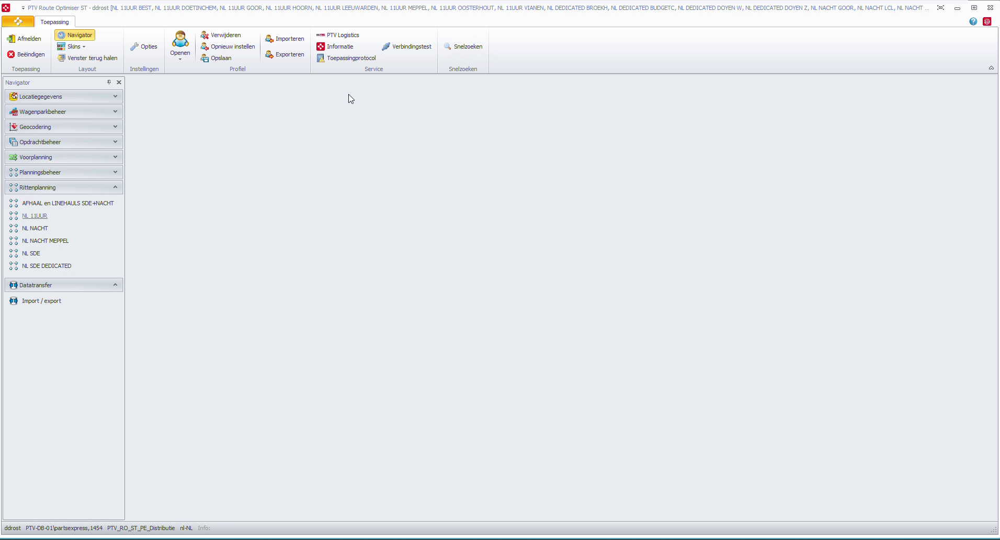
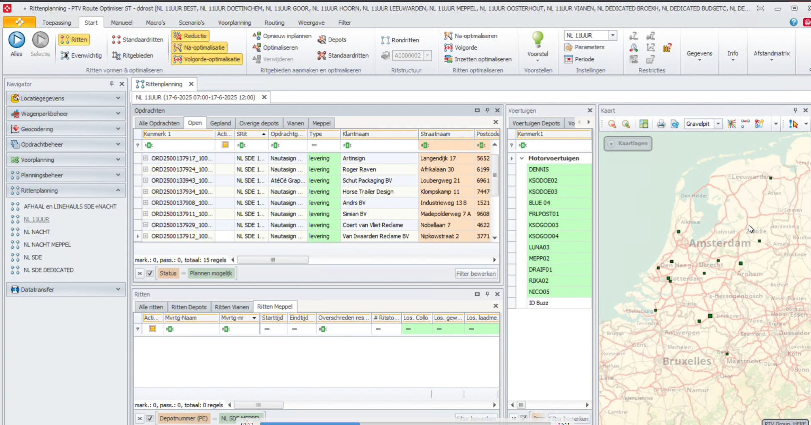
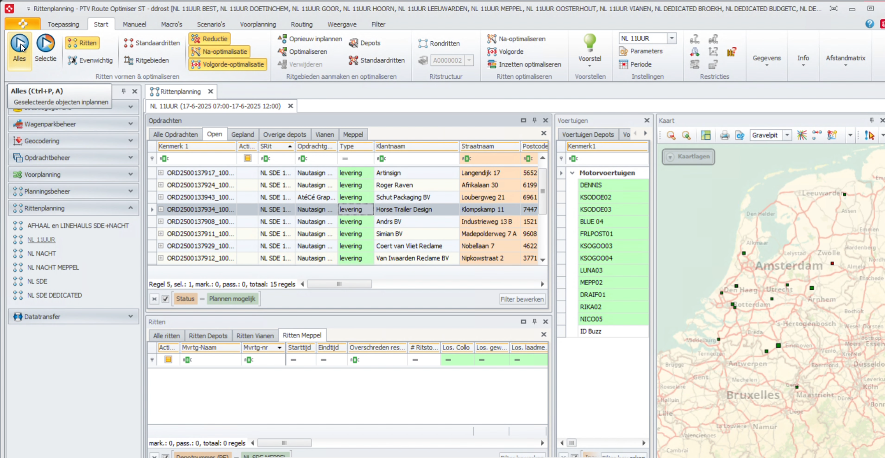
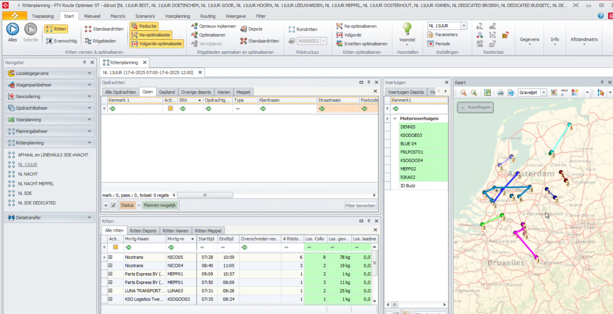
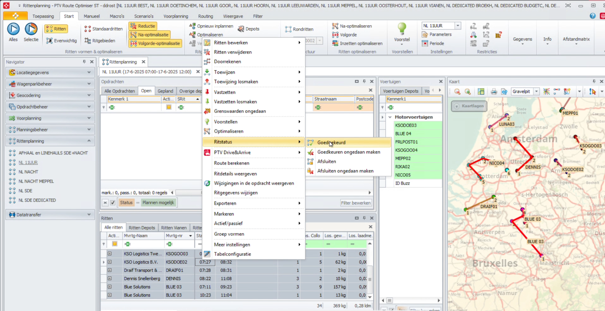
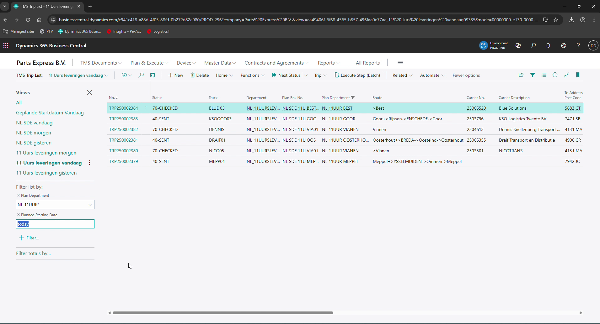
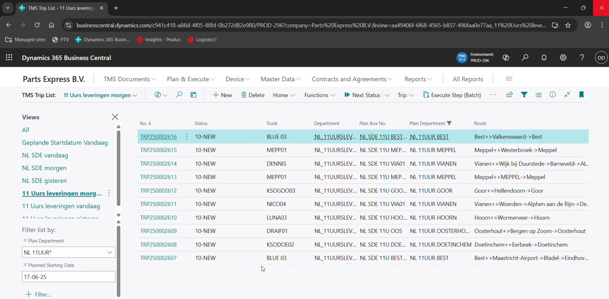
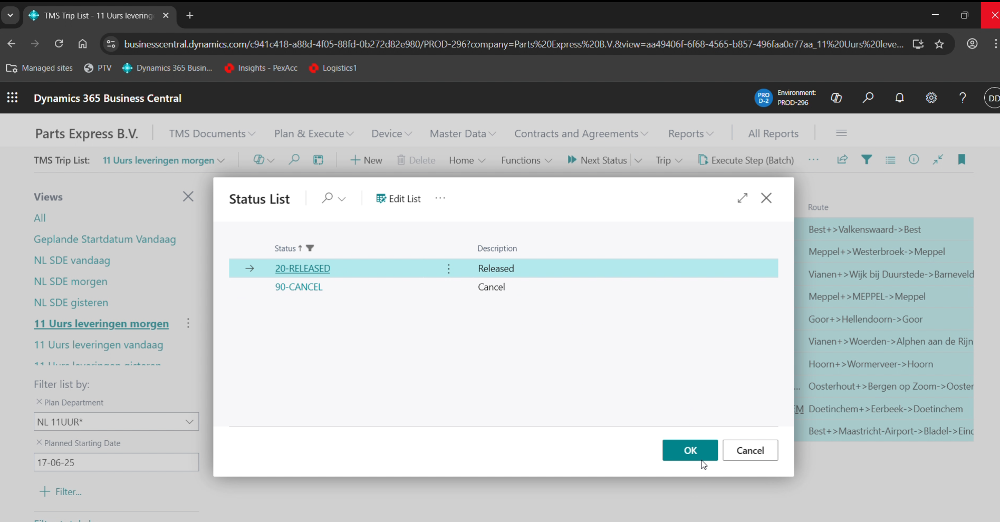

In deze handleiding leer je hoe je werkt met PTV en daarna Boltrics voor het 11-uurs netwerk. Je kunt klikken op stappen, toelichting openen en de video bekijken. Alles staat hieronder overzichtelijk weergegeven. TIP: kijk eerst de video!
Open PTV en kies de juiste planning. Controleer of je op het netwerk van 11:00 werkt.
 Toelichting:De datum staat automatisch op de volgende werkdag.
Zet de opdrachten scherm op Open, zodat je alle opdrachten ziet.
 Toelichting:Je kunt sorteren op netwerk, leverdatum en ritstatus. Planning staat automatisch op volgende werkdag. Let op, kies in het ritten scherm voor het tabblad Alle ritten.
Voer een controle uit op openingstijden, adressen en plan dan alle opdrachten.
 Toelichting:Gebruik de knop -Alles- linksboven zoals aangegeven op afbeelding. Alle opdrachten worden nu gepland.
Bekijk of alles correct is ingepland, controleer levermomenten en eventuele conflicten.
 Toelichting:Let op: ritten mogen niet overlappen met venstertijden. Conflicten worden rood weergegeven.
Selecteer alle routes, ga naar...
 Toelichting:Selecteer alle routes, rechtermuisknop, ga naar Ritstatus en selecteer Goedgekeurd.
Na bevestiging van de planning ga je terug naar Boltrics om de routes af te werken.
 Toelichting:Gebruik de combinatie toets CTRL + Q en typ "TMS Trip List" in. Selecteer daarna de TMS Trip List.
Selecteer "11 Uurs leveringen morgen" om de geplande ritten te zien van morgen.
 Toelichting:Door de juiste filters te gebruiken, kom je op de juiste ritten. Zie ook de handleiding op de hoofdpagina: Uitleg filters/zoekvelden.
Selecteer alle routes en druk op "Next Status".
 Toelichting:Kies voor "20-RELEASED" en druk daarna op OK.